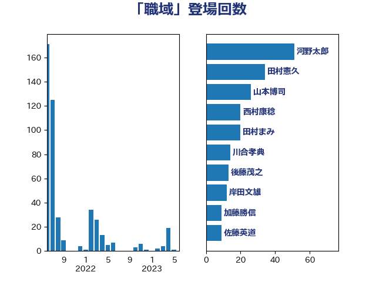

単語「職域」

| 河野太郎 | 自由民主党 | 51 回 |
| 田村憲久 | 自由民主党 | 34 回 |
| 山本博司 | 公明党 | 26 回 |
| 西村康稔 | 自由民主党 | 20 回 |
| 田村まみ | 国民民主党 | 20 回 |
| 川合孝典 | 国民民主党 | 14 回 |
| 後藤茂之 | 自由民主党 | 13 回 |
| 岸田文雄 | 自由民主党 | 12 回 |
| 加藤勝信 | 自由民主党 | 9 回 |
| 佐藤英道 | 公明党 | 9 回 |
| 東徹 | 日本維新の会 | 8 回 |
| 西村智奈美 | 立憲民主党 | 7 回 |
| 枝野幸男 | 立憲民主党 | 7 回 |
| 安江伸夫 | 公明党 | 7 回 |
| 中島克仁 | 立憲民主党 | 7 回 |
| 足立康史 | 日本維新の会 | 6 回 |
| 福島みずほ | 社会民主党 | 6 回 |
| 大西健介 | 立憲民主党 | 6 回 |
| 丸川珠代 | 自由民主党 | 6 回 |
| 遠藤敬 | 日本維新の会 | 5 回 |
| 堀内詔子 | 自由民主党 | 5 回 |
| 田島麻衣子 | 立憲民主党 | 4 回 |
| 浜口誠 | 国民民主党 | 4 回 |
| こやり隆史 | 自由民主党 | 4 回 |
| 長妻昭 | 立憲民主党 | 3 回 |
| 萩生田光一 | 自由民主党 | 3 回 |
| 稲津久 | 公明党 | 3 回 |
| 岩谷良平 | 日本維新の会 | 3 回 |
| 塩田博昭 | 公明党 | 3 回 |
| 仁木博文 | 無所属 | 3 回 |
| 鰐淵洋子 | 公明党 | 2 回 |
| 野田聖子 | 自由民主党 | 2 回 |
| 足立敏之 | 自由民主党 | 2 回 |
| 藤井比早之 | 自由民主党 | 2 回 |
| 芳賀道也 | 国民民主党 | 2 回 |
| 田中健 | 国民民主党 | 2 回 |
| 森屋隆 | 立憲民主党 | 2 回 |
| 後藤祐一 | 立憲民主党 | 2 回 |
| 小寺裕雄 | 自由民主党 | 2 回 |
| 小倉將信 | 自由民主党 | 2 回 |
| 三木圭恵 | 日本維新の会 | 2 回 |
| 鬼木誠 | 立憲民主党 | 1 回 |
| 高木かおり | 日本維新の会 | 1 回 |
| 音喜多駿 | 日本維新の会 | 1 回 |
| 青柳陽一郎 | 立憲民主党 | 1 回 |
| 金子恭之 | 自由民主党 | 1 回 |
| 野田国義 | 立憲民主党 | 1 回 |
| 道下大樹 | 立憲民主党 | 1 回 |
| 赤羽一嘉 | 公明党 | 1 回 |
| 谷公一 | 自由民主党 | 1 回 |
| 菅義偉 | 自由民主党 | 1 回 |
| 自見はなこ | 自由民主党 | 1 回 |
| 石井章 | 日本維新の会 | 1 回 |
| 石井準一 | 自由民主党 | 1 回 |
| 石井正弘 | 自由民主党 | 1 回 |
| 田村貴昭 | 日本共産党 | 1 回 |
| 田村智子 | 日本共産党 | 1 回 |
| 田名部匡代 | 立憲民主党 | 1 回 |
| 生稲晃子 | 自由民主党 | 1 回 |
| 牧山ひろえ | 立憲民主党 | 1 回 |
| 片山大介 | 日本維新の会 | 1 回 |
| 熊谷裕人 | 立憲民主党 | 1 回 |
| 浜田靖一 | 自由民主党 | 1 回 |
| 池下卓 | 日本維新の会 | 1 回 |
| 水岡俊一 | 立憲民主党 | 1 回 |
| 武部新 | 自由民主党 | 1 回 |
| 柴愼一 | 立憲民主党 | 1 回 |
| 柴山昌彦 | 自由民主党 | 1 回 |
| 末松信介 | 自由民主党 | 1 回 |
| 有村治子 | 自由民主党 | 1 回 |
| 斎藤嘉隆 | 立憲民主党 | 1 回 |
| 打越さく良 | 立憲民主党 | 1 回 |
| 平将明 | 自由民主党 | 1 回 |
| 山本香苗 | 公明党 | 1 回 |
| 山本順三 | 自由民主党 | 1 回 |
| 小沢雅仁 | 立憲民主党 | 1 回 |
| 宮本徹 | 日本共産党 | 1 回 |
| 大串博志 | 立憲民主党 | 1 回 |
| 伊藤孝恵 | 国民民主党 | 1 回 |
| 伊藤俊輔 | 立憲民主党 | 1 回 |
| 中山展宏 | 自由民主党 | 1 回 |
| 上田清司 | 国民民主党 | 1 回 |